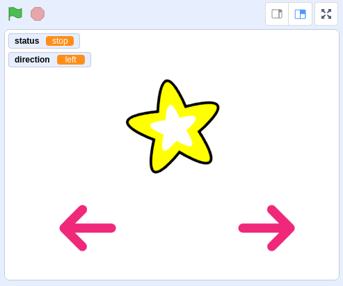
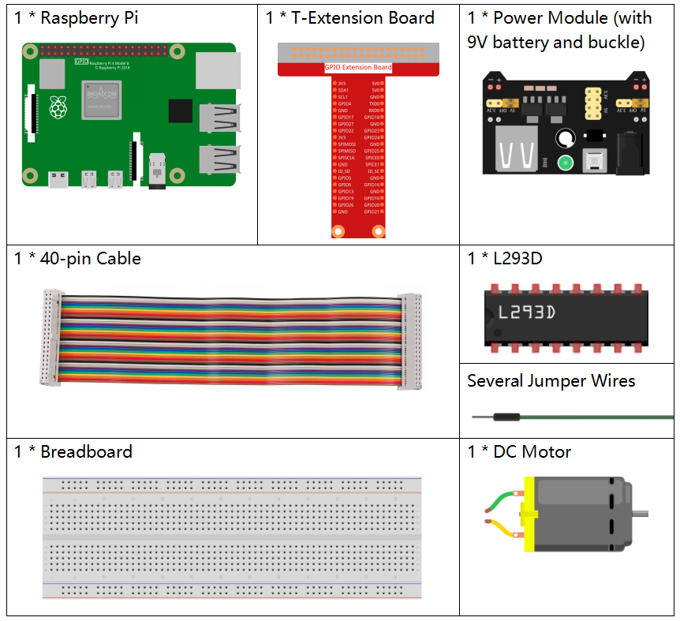
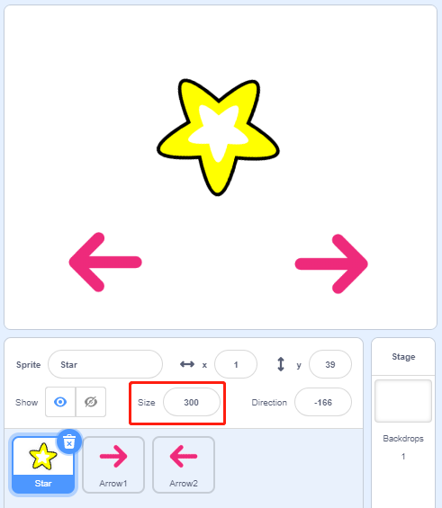

Note
Hello, welcome to the SunFounder Raspberry Pi & Arduino & ESP32 Enthusiasts Community on Facebook! Dive deeper into Raspberry Pi, Arduino, and ESP32 with fellow enthusiasts.
Why Join?
Expert Support: Solve post-sale issues and technical challenges with help from our community and team.
Learn & Share: Exchange tips and tutorials to enhance your skills.
Exclusive Previews: Get early access to new product announcements and sneak peeks.
Special Discounts: Enjoy exclusive discounts on our newest products.
Festive Promotions and Giveaways: Take part in giveaways and holiday promotions.
👉 Ready to explore and create with us? Click [here] and join today!
1.10 Rotating fan
In this project, we will make a spinning star sprite and fan.
Required Components
Build the Circuit

Load the Code and See What Happens
Load the code file (1.10_rotating_fan.sb3) to Scratch 3.
After clicking the green flag on the stage, click on the star sprite，then it and the motor will rotate clockwise; you can change the direction of rotation by clicking on the two arrow sprites. When you click on the star sprite again, it and the motor will stop rotating.
Tips on Sprite
Delete the default sprite, then select the Star sprite and the Arrow1 sprite, and copy Arrow1 once.

In the Costumes option, change the Arrow2 sprite to a different direction costume.

Adjust the size and position of the sprite appropriately.
Tips on Codes
Flow Chart

In this code, you will see 2 pink blocks, turn left and turn right, which are our custom blocks (functions).

How to Make a Block?
Let’s learn how to make a block (function). The block (function) can be used to simplify your program, especially if you perform the same operation multiple times. Putting these operations into a newly declared block can be very convenient for you.
First find My Blocks in the block palette, then select Make a Block.

Enter the name of the new block.

After writing the function of the new block in the coding area, save it and then you can find the block in the blocks palette.

turn left
This is the code inside the turn left block to make the motor rotate counterclockwise.

turn right
This is the code inside the turn right block to make the motor rotate clockwise.